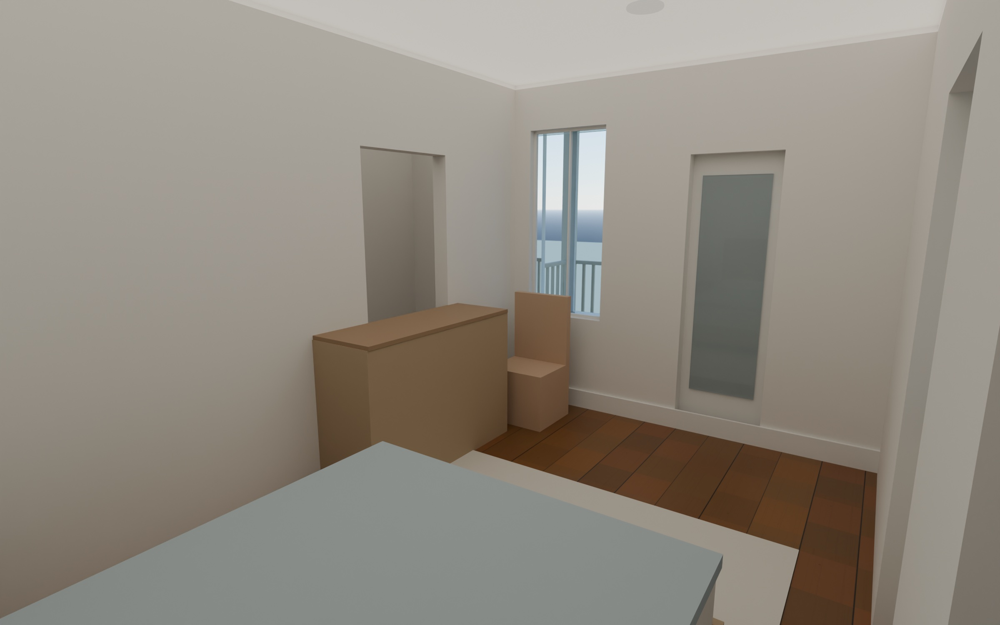

View
Rooms
Layers
Drag to rotate. Right-drag or two fingers to pan. Scroll or pinch to zoom. Click a window to step inside that room; Esc goes back.
What is drawn and what is assumed
- From plans Only the rear porch level and its openings. The cover sheet lists the second floor as unchanged.
- From photos Brick exterior, front gable, roof and chimney, front porch with steps, front door and paired windows, right-wall window rows. The neighbor is removed. Sizes are estimated from the photos.
- Concept There are no drawings of the second-floor rooms. The partitions, stair opening, rooms and furniture are my layout.
- Your pick Walnut thin-shaker island, white shaker cabinets elsewhere, white marble counters, early American pine floors, Bosch appliance package.
Renderings

Primary bedroom. Concept layout.